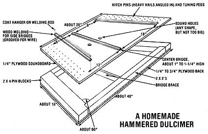

Even homesteaders need to relax and enjoy themselves from time to time, right? And almost everybody these days wants to cut his or her cost of living. So how about a little do-it-yourself entertainment?
And that's what this column is all about. Down-home music that you can make . . . and the instruments (which, in some cases, you can also make!) to play that music on.
The important thing is that this is your column. If you like it, write to me and let me know. If you have some ideas for this feature, let me know that. I'm open to any suggestions or information you care to contribute. I'll even try to answer your questions about down-home music . . . but-both for the benefit of all MOTHER's readers and to ease my correspondence load-I'll deal with those questions, whenever possible, here in this column . . . rather than in personal letters.
Address your correspondence for this column and this column only-to Marc Bristol, 18520 312th Ave. N.E., Duvall, Wash. 98019.
When I covered the subject of dulcimers a couple of issues back in MOTHER NO. 67, I thought it might result in a popular article. Well, the many responses that you've sent to me-and to those folks in the dulcimer business whom I referred to in the column-certainly proved me correct on that score . . . so I'm plunging right in with some more tidbits I've gathered since that article was written.
HAMMERED DULCIMERS
Actually, I'm going to start this column with a discussion of hammered dulcimers: large, many-stringed musicmakers-played with small sticklike hammers-which are really quite different instruments from the smaller, threeor four-stringed Appalachian "lap" dulcimers I described in issue 67. (Well, the two instruments aren't completely different . . . they do both belong to the zither family.)
The name "dulcimer" has been associated with the hammered variety since biblical times, but has been applied to the smaller, fretted instrument for only around the last 200 years. Since the word literally means "sweet tune"-and both instruments do, indeed, produce mellifluous tones-perhaps some old mountaineer plucked the instrument title out of the Good Book and attached it to the Appalachian melody-maker.
The large hammered music box is a forerunner of the piano, but the pounding pieces that strike its strings are held in the player's hands instead of being built into the instrument's body and mechanically operated. Many countries throughout Europe and Asia have traditional versions of the hammered dulcimer-and a great many styles of music are played on them-but the basic form of ancient "sweet-tuner" is nothing more than a trapezoidal sound box that has several groups (or "courses") of strings passing over a support (or side bridge) at one end of the instrument, across an off-center bridge, and over another support to the other end. (Some dulcimers have two central bridges . . . the second being used to carry an extra set of bass strings.) The midbridge is a distinctive trait of the hammered dulcimer, and distinguishes the instrument from its ancestor, the psaltery.
As you can see in the accompanying diagram, a homemade hammered dulcimer can be built from scraps of dimensional lumber and plywood. You will probably need to purchase tuning pegs (old piano pegs will work fine), a tuning wrench (a hardware store "tapping chuck" should serve the purpose), and a supply of No. 7 or No. 8 music wire (it's available from most music stores, hobby shops, and mail order music supply houses). In addition, you can expect to get superior tone from the finished instrument if you build its top-the sounding board-from a good piece of spruce.
The dulcimer's top and back are simply secured with a good wood glue, then nailed in place. (Be sure to avoid putting any of the metal fasteners where the tuning pegs will later be installed.) Each string is wrapped three or four times around a tuning peg, laid over the offcenter bridge, looped around a hitch pin on the opposite side, and then run back to another peg on the original side. Every wire then forms two strings, and each pair will give one note on the right side of the main bridge and another (a fifth higher) on the left side of the divider.
One standard tuning for a 12-course hammered dulcimer-running from low notes at the bottom of the instrument to high ones at the top-is G#, A, B, C# (this is the CM just above middle C), D, E, F#, G, A, B, C, and D on the left side of the bridge . . . and C#, D, E, F#, G, A, B, C, D, E, F, and G on the right side of the bridge. You'll have to adjust the new instrument several times, over a period of days, before it'll "settle down" and stay in tune.
For a more complete version of these instructions, send $3.75 (postpaid) to Mugwumps, Dept. TMEN, 1600 Billman Lane, Silver Spring, Maryland 20902 for "The Hammer Dulcimer Compendium". The package will include some playing information and history as well as building plans. ( Mugwumps magazine, by the way, is devoted to the subject of hammered dulcimers and other vintage musical instruments, comes out six times annually, and costs $12 for a year's subscription. A sample issue can be ordered for $2.00. )
A prominent hammered dulcimerist, Sam Rizzetta, has written yet another construction guide, "Making a Hammered Dulcimer" . . . and a publication called "Hammer Dulcimer History and Playing". Both documents are available-free for the asking-from Public Inquiry Mail, Smithsonian Institution, Dept. TMEN, Washington, D.C. 20560.
Many companies offer kits for building hammered dulcimers, too. Ray Mooers, of the Dusty Strings Dulcimer Company, dropped in one day recently and showed me his firm's two basic models of sweettuners (one single-bridged and the other double-bridged). Both are available as kits that need only sanding, finishing, and stringing. Prices start at $165 . . . and the package comes complete with an owner's guidebook. Additional options can be ordered at extra cost. For example, a basic kit with a spruce soundboard costs $195. You can write for a free catalog to Dusty Strings Dulcimer Company, Dept. TMEN, 1848 Northeast Ravenna Boulevard, Seattle, Washington 98105.
(Other sources for kits, books, records, and accessories were mentioned in my columns in issues 55, 63, and 67. )
THE APPALACHIAN DULCIMER
Moving back to the lap dulcimers I discussed three issues ago, I'm pleased to report that there was considerable response to my mention of the cardboard dulcimer kits sold by David Cross of Backyard Music. David's moved since I wrote that column andjudging from some of my correspondence-not all of his mail has been forwarded, so here's his new address: Backyard Music, Dept. TMEN, 509 South 44th Street, Philadelphia, Pennsylvania 19104.
While resting between sets with the Okie Doke Band at a local energy fair, I met Hank and Robin Levin of Smoggy Mountain Dulcimers, which is a company that makes just one product . . . an Appalachian dulcimer kit. As you can imagine, the couple have perfected that item and make every attempt to be competitive in price and quality with the other do-it-yourself dulcimer packages on the market. The Smoggy Mountain kit is called the "Tennessee Teardrop" and features a cherry body. No special tools or skills are required to assemble the instrument (the parts are already cut and bent to shape) . . . and the package inc ludes a simple, well-illustrated instruction sheet. When you're done, you'll have a fullsized, four-string mountain dulcimer for only $48 postpaid . . . a price that even includes the glue! Write to Smoggy Mountain, Dept. TMEN, P.O. Box 888. Granite Falls, Washington 98252 for further details.
I'm also happy to tell you that Rose LeClere and David Johnston (at Black Mountain Instruments) have gotten such a great response to my mention of their lap dulcimer kit in MOTHER NO. 67 that they've decided to offer discounts to the readers of the Homegrown Music column. . . 25% off a kit's price, and 20% off the cost of a case. You can't beat a deal like that! Black Mountain's basic kitwhich I listed before as costing $53-is a bit fancier than Smoggy Mountain's (for one thing, it has a spruce top), but it doe;: produce a smaller instrument. For more information, write to Rose and Davidat Black Mountain Instruments, Dept. TMEN, P.O. Box 779, Lower Lake, Cali fornia 95457-and tell them MOTHER sent you!
Another valuable resource for lap dul cimer builders is an Oak Publication: book, Jean Ritchie's Dulcimer People . Much of the volume is devoted to provided ing information about the tradition of the fretted instrument, as well as about some of the different playing styles in Jean's "extended dulcimer-playing fam- fly". It also includes some instruction provided by Hank Levin (a member of that family) on how to build an instrument from scratch . . . which might be of great assistance to anyone assembling a lap dulcimer kit, as well. The entire book is a fine acquisition for folks interested in the Appalachian dulcimer . . . and it costs only $5.95-plus $1.00 shipping and handling-from the Music Sales Corporation, Dept. TMEN, Bellvale Road, Ches ter, New York 10918. Oak also carries The Hammered Dulcimer , for the same price. (Be sure to ask for the firm's free catalog while you're at it.)
MISCELLANY
Well, once you've mastered your dulcimer playing skills-on either kind of instrument-and you're ready to make the whole world sing, where should you head? My advice is to set out for Winfield, Kansas . . . which hosts the annual National Guitar Flatpicking Championships. The event includes separate contests for both hammered and mountain dulcimers, as well as for fingerpicked guitar, bluegrass banjo, mandolin, fiddle, and autoharp.
This year's festival-from September 17 through 20-will be the tenth anniversary of the championships. Attendance is limited, so advance tickets area must. Write to Walnut Valley Association, Inc., Dept. TMEN, Box 245, Winfield, Kansas 67156 for more details.
A CLOSING NOTE
If you like tub bass and washboard playing, western swing, and/or rockabilly, you might enjoy our long-awaited (well, by me, at any rate) Okie Doke Band record, a seven-inch LP that includes "Snake-Charmin' Baby", "Coot From Tennessee", "Milk Cow Blues", and "Let's Boogie". Our group, by the way, packages the small disks in the plastic sleeves used by collectors of old 45's-and we include an attractive folded insert-so the well-protected records now look pretty slick, to boot! If you'd like to see our new mini-album (and, of course, listen to four of our favorite tunes), you can order the Okie Doke Band record for $4.00 (postpaid) from King Noodle Records, Dept. TMEN, Box 25, Duvall, Washington 98109.
|
Down-home musician Marc Bristol sings and strums a tune at a local music festival. |
 |
|